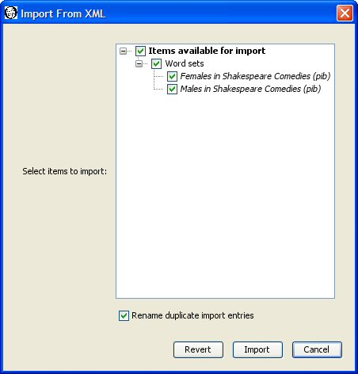

|
|
|
WordHoard provides for exporting word sets and work sets to local files in XML format. You may also import sets from a saved XML file created by WordHoard. This allows you to backup and restore your sets. These facilities are still under development.
To begin the export process select "Export" from the "File" menu. A dialog appears listing the word sets and work sets you can export. These include public sets as well as your private sets if you are logged in. The dialog also lists public and your private query definitions. Check the boxes next to the items you wish to export. Check the box next to "Word sets" to select all word sets for export. Check the box next to "Work sets" to select all work sets for export. As an example we select just two word sets for export.
Press the OK button to begin the export process. WordHoard displays a standard "save file" dialog allowing you to set the name of the output file. Enter a file name and press the "Save" button to begin the export process.
WordHoard displays a progress report of the export process in a new tab in the Calculator window. You may cancel the export by pressing the Cancel button. Please be patient if you press the Cancel button. It may take a while for the cancel operation to take effect.
When the export process finishes, the cancel button becomes a close button which you can press to close the progress display.
Should the export process fail, an error message appears in red. Press the "Close" button to close the progress display.
You may import sets you saved using WordHoard's export facility by selecting "Import" from the "File" menu. WordHoard displays an open file dialog allowing you to select the file containing the saved sets.
One you select a file from which to import sets, WordHoard reads the file contents. This may take a while. Once the file has been completely read and the XML parsed, WordHoard displays a dialog allowing you to select which items you wish to import. Check the boxes next to the the items you wish to import. If you check "Rename duplicate import entries", WordHoard automatically renames imported sets with the same names as existing sets, otherwise sets with duplicate names will not be imported. The new name will appear in the final import report. You can edit the automatically generated set names later using the edit items under the "Sets" menu.

WordHoard displays a progress report of the import process in a new tab in the Calculator window. You may cancel the import by pressing the Cancel button. Please be patient if you press the Cancel button. It may take a while for the cancel operation to take effect.
When the Import process finishes, the progress pane displays a report describing the results of the import. The report tells how duplicate sets were renamed, which sets were imported successfully, and which could not be imported. The cancel button becomes a close button which you can press to close the import report.
Should the import process fail completely, an error message appears in red. Press the "Close" button to close the progress display.
|
|
|